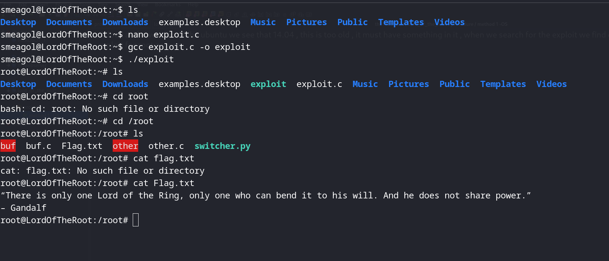

we look at the version of the ubuntu we see that 14.04 , this is too old , it must have something in it , when we search for the exploit we find out that yes , it has an exploit for root access :
we exploit it and get the flag:
exploit: https://www.exploit-db.com/exploits/39166
